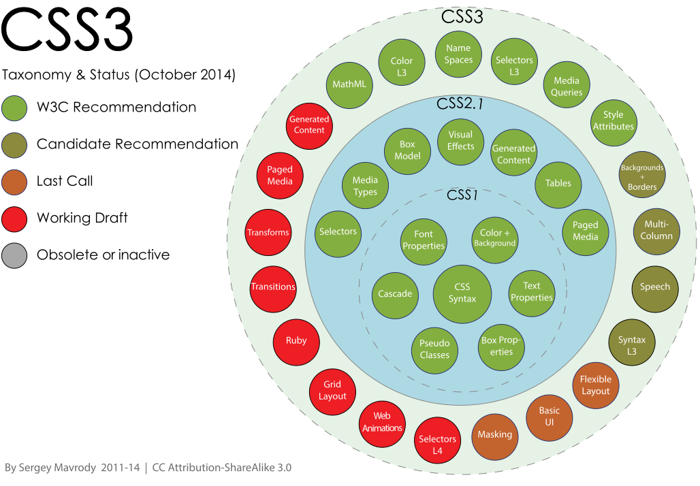
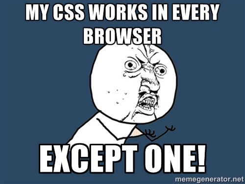
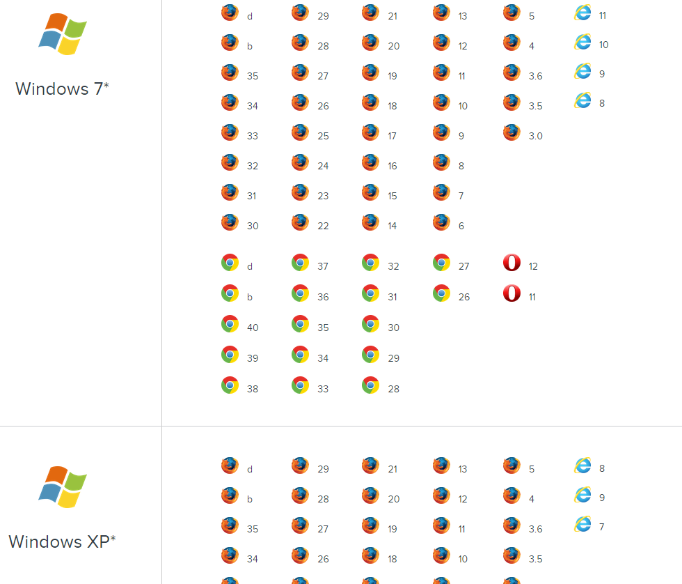
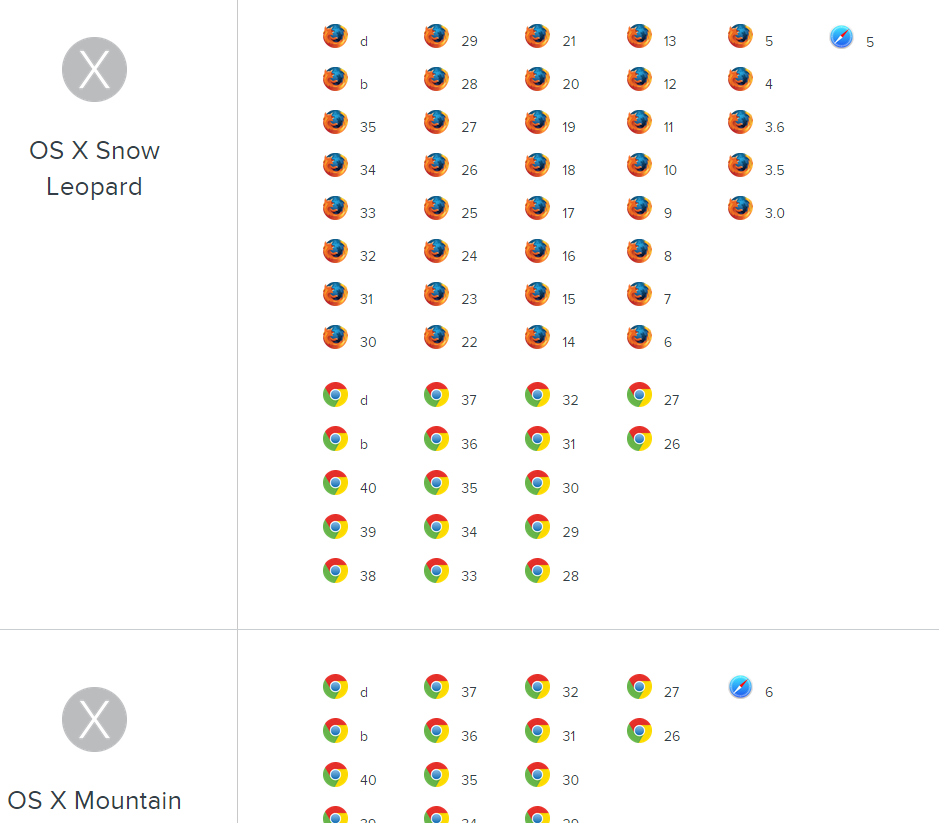
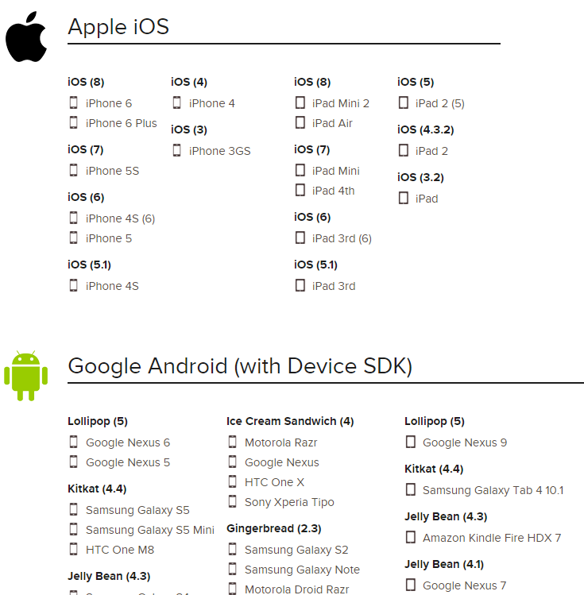
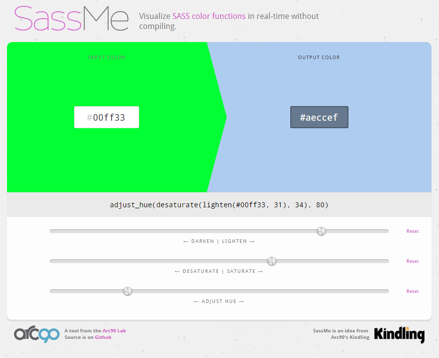

Improving your cross-browser stylesheets
with SCSS
Created by Chris Decoster
Topics:
- What CSS can we use?
- Why SCSS?
- Best practices
- Resources
Take aways:
- Inspired you to think differently about how you write css
- Learned something new about SCSS || CSS
- Provided you with resources for further study
- Understand more about cross browser CSS development
So we are writing CSS
What version can we use?
Isn't this Html5? , CSS 2 , 2.1 , 3 , browser versions?
The CSS spec is separate from HTML5

CSS3 refers to an ongoing spec organised in modules...
CSS specification
CSS in practice
The lowest browser versions you are required to support, determine what css features you can use.
After we determine this...
how do I find out if I can use x-property everywhere?
Compatibility charts
The cross browser CSS reality
you may have to work around inconsistent browser implementations and edge cases.
- - Vendor prefixes -webkit, -ms, -moz, -o, -khtml
- - ::-webkit-scrollbar-x styling
- - Rounded stroke with a dotted style
- - Styling svg elements with CSS classes in Android 4.0
- - Quirks with css transform- properties
How can we deal with so many browsers, their versions and operating systems?
- Remember to breathe
- Web developers continue to make quality products despite cross browser issues
- Its unlikely you will be the first person to encounter an issue use online resources
How to work productively in cross browser development
- Pair program with your colleagues, discuss and research issues online
- Share and document browser quirks with your team and the online communities, MDN, StackOverflow, Google Groups
- If you end up determining an issue doesn't have a workaround/polyfill sometimes it has to be "Wont fix".
- Make it known to the development and QA team, maybe even tech support.
Don't be this guy
Use Automated testing
Cloud based cross browser testing
  
Use a reset/normalise stylesheet
Not all browsers start with the same css property values for specific element with properties like margin, fonts, overflow
Avoid cross browser inconsistency from a stylesheet that has solved this problem
Most css frameworks will already have one, eg bootstrap uses the popular normalize.css lib
Cross browser CSS is better today than it ever has been
This is supposed to be a smiley face (Acid 2 test) IE8's standards mode
 IE6
IE6
 IE7
IE7
Future browser versions
All major browsers will autoupdate (Evergreen)
The w3c have impressive opensource test coverage beyond the acid tests. csswg-test
Sass and Scss, are they different??
- They are derived from the same project, they have a different syntax
- SASS has no { curlys } and its indentation-oriented
- SCSS is more like a superset of css
- See examples on http://sass-lang.com/
- Article SASS-vs-SCSS
SASS itself has different implementations
Sass transpiler engines:
- Ruby SASS (advanced features)
- LibSASS (very fast, no Ruby dependency)

Both SASS implementations are mature
-
If you need to verify SASS engine compatibility
sass-compatibility.github.io
Why are we using Scss?
SASS lets us
- Write stylesheets following the DRY principle
- Solve cross browser issues in libraries
- Improve our code organisation
- More easily tweak css values for future adjustments and even create different themes through configuration
Variables
$font-stack: Helvetica, sans-serif;
$primary-color: #333;
body {
font: 100% $font-stack;
color: $primary-color;
}
Operators
+, -, *, /, %
$home-available-width = 960px;
$home-section = $home-available-width/2;
.home-sub-section {
width: $home-section/2; //240px;
height: 300px / 960px * 100%; //31.25%
margin-left: 5px + 8px/2px; //9px
}
Nesting
Write styles using nested selectors
nav {
ul {
margin: 0;
}
li {
display: inline-block;
}
a {
display: block;
padding: 6px 12px;
text-decoration: none;
}
}
Your IDE code-folding will now let you fold everything in nav
Compiled result of nested selectors
nav ul {
margin: 0;
}
nav li {
display: inline-block;
}
nav a {
display: block;
padding: 6px 12px;
text-decoration: none;
}
Imports
A way to separate and organise your stylesheets into files.
// The result of this scss file will be a single css file
@imports 'reset';
@imports 'config';
@imports './layout';
@imports './pages/homepage';
@imports './pages/contact-us';
@imports './pages/about';
Mixins
Solve cross browser issues in one line, useful for utilities and simplifying your stylesheets
//hyphens property needs some vendor prefixes
@import 'mixin-library';
p {
@include vendor-prefix(hyphens, auto)
}
@mixin vendor-prefix($name, $value) {
-webkit-#{$name}: #{$value};
-ms-#{$name}: #{$value};
-moz-#{$name}: #{$value};
-o-#{$name}: #{$value};
#{$name}: #{$value};
}
The compiled CSS for the vendor-prefix mixin
p {
-webkit-hyphens: auto;
-ms-hyphens: auto;
-moz-hyphens: auto;
-o-hyphens: auto;
hyphens: auto;
}
Functions let us create reusable calculations
@function percent-value ($size) {
@return 100% / $size;
}
.columns-two {
width: percent-value(2); // 2 columns 50%
}
.columns-three {
width: percent-value(3); // 3 columns 33.3%
}
SASS provides robust color utilities
$base-color: #AD141E;
darken($base-color, 10%);
lighten($base-color, 10%);
Dealing with color
saturate($base-color, 20%);
desaturate($base-color, 20%);
adjust-hue($base-color, 20%);
See how you can inline them like or configure your colors
$base-color = rgba(orange, 0.5);
$base-border-color = darken($base-color, 30%);
.element {
border: 3px solid $base-border-color;
text-shadow: 0 -1px 0 darken($base-color, 16%);
@include box-shadow(inset 0 1px 0 lighten($base-color, 20%));
}
See the results of SASS color utilities visually
http://sassme.arc90.com/
General purpose logic and calculations
@function clamp($value, $min, $max) {
@return if($value > $max, $max, if($value < $min, $min, $value));
}
clamp(4, 1, 3); // 3
clamp(-5, 10, 20); // 10
if else syntax
$function method($params) {
@if condition-method-a($params) and condition-method-b($params) {
@return $value;
} @else {
@warn "Warn and error for #{$params}";
}
}
Iterate over list or map
@each $header, $size in (h1: 2em, h2: 1.5em, h3: 1.2em) {
#{$header} {
font-size: $size;
}
}
//compiles to
h1 {
font-size: 2em; }
h2 {
font-size: 1.5em; }
h3 {
font-size: 1.2em; }
Best Practices
Code Quality
Could you change the button color please?
.btnLarge {width:200px;height:200px;display:block;};
.orangeButton {
background-color: orange;@extend %button-normal;
}
.blue-btn {
@extend %btnBIG;
background-color: blue;
}
.BUTTONSMALL {width:50px;height:50px;display:block;};
.greenBUTTON{width:50px;height:50px;display:block;background-color:green;};
.button-SmallBlack
{@import specialButton(2,4);
width:50px;height:$randomHeight;display:block;
background-color:black;
};

Its not fun to read or write code like this.
We are in danger of falling into the Broken Window Theory
So what makes css easier to read and maintain?
Consistent Formatting
- Write classes and ids in 'hyphenated-case'
- Use consistent spacing, line-breaks and curly formatting
#home-section {
width: 960px;
}
.button-large {
width: 100px;
height: 40px;
}
.button-small {
width: 30px;
height: 10px;
}
Comments
Document complexity just like your Javascript
Sass has both /* */ and //
Comment browser a specific styles
// Safari disabled state override
input[disabled] {
-webkit-text-fill-color: rgb(14, 43, 141);
-webkit-opacity: 1;
color: rgb(14, 43, 141);
}
Use effective variable names
Vague names
$link: #ffa600;
$width: 300px;
$length: 200px;
$radius: 5px;
Be more specific
$link-primary: #ffa600;
$info-button-width: 300px;
$home-sidebar-length: 200px;
$tab-radius: 5px;
Properties order
We have hundreds of possible properties, would a logical order make this easier to read?
.button {
font-family: Avenir, Helvetica, Arial, sans-serif;
margin: 1em 0;
text-transform: uppercase;
padding: 1em 4em;
color: #fff;
border: 0.25em solid #196e76;
text-decoration: none;
background: #196e76;
font-size: 3em;
display: inline-block;
text-align: center;
}
Order and group your properties by context
- Layout (position, float, clear, display)
- Box Model (width, height, margin, padding)
- Visual (color, background, border, box-shadow)
- Typography (font-size, font-family, text-align)
- Misc (cursor, overflow, z-index)
A contextual order
.button {
display: inline-block;
margin: 1em 0;
padding: 1em 4em;
color: #fff;
background: #196e76;
border: 0.25em solid #196e76;
font-size: 3em;
font-family: Avenir, Helvetica, Arial, sans-serif;
text-align: center;
text-transform: uppercase;
text-decoration: none;
}
Sorting properties by context
- Redundant and duplicate properties will be more obvious
- Less of a cognitive load to find a specific property to modify
Use the same order in your SASS mixins
@mixin button($color, $background-color, $border-color, $font-family) {
display: inline-block;
margin: 1em 0;
padding: 1em 4em;
color: $color;
background: $background-color;
border: 0.25em solid $border-color;
font-size: 3em;
font-family: $font-family;
text-align: center;
text-transform: uppercase;
text-decoration: none;
}
Order your css styles 'visually' where possible
.header {}
.header-nav {}
.sidebar {}
.main-content {}
.section-a {}
.section-b {}
.section-c {}
.footer-nav {}
.footer {}
Don't over complicate your selectors
Rule of thumb with more than 3 levels you may want to rethink the style
nav div li ul li > a {
/* Over specific hard to read */
}
.sub-menu a {
/* Think about using a class */
}
Limit your SASS nesting
3 is also a good indicator, nesting should be easy to read.
.element {
/* your general CSS properties */
&:hover,
&:active,
&:focus {
/* hover/focus state can be encapsulated */
}
&::before {
/* The same for pseudo styles */
}
}
Redundant @mixins can bloat your css
- Each time you use a mixin it will insert the properties into the final css
- Mixins are best suited when argument(s) are needed eg: @include rounded-corner(3);
- When no parameter is required, @extend or placeholders prevent repitition in the compiled css
@extend example
.bg-image {
width: 100%;
background-position: center center;
background-size: cover;
background-repeat: no-repeat;
}
.image-one {
@extend .bg-image;
background-image:url("/images/image-one.jpg");
}
.image-two {
@extend .bg-image;
background-image:url("/images/image-two.jpg");
}
Compiles to
.bg-image, .image-one, .image-two {
width: 100%;
background-position: center center;
background-size: cover;
background-repeat: no-repeat;
}
.image-one {
background-image:url("/images/image-one.jpg");
}
.image-two {
background-image:url("/images/image-two.jpg");
}
Using @mixin
The more you use it, the bloated the compiled stylesheet
.image-one {
width: 100%;
background-position: center center;
background-size: cover;
background-repeat: no-repeat;
background-image:url("/images/image-one.jpg");
}
.image-two {
width: 100%;
background-position: center center;
background-size: cover;
background-repeat: no-repeat;
background-image:url("/images/image-two.jpg");
}
Use the SASS to avoid hard coding style, calculations and repeating yourself
Resources
Sass
- Sass api docs
- sass-lang community on Google Groups (Support forum)
- Bourbon Scss library (brilliant mixin library)
- Stack overflow (6000+ questions tagged)
- thesassway.com (brilliant articles)
- Sass engine compatibility
CSS Compatibility
Source Articles
.END {
display: none;
}